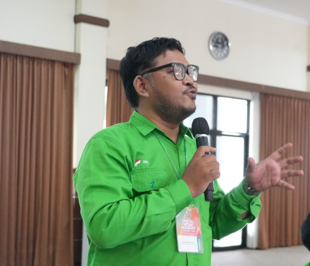

Jutaan perempuan di Indonesia masih menanggung beban pengeluaran ekstra untuk kebutuhan biologis mutlak mereka akibat PPN 11% pada pembalut wanita. Menyoroti ketimpangan itu, tokoh muda asal Surabaya, Nasfa Uuth Akhmadie, mendesak Direktorat Jenderal Pajak (DJP) Kementerian Keuangan untuk merevisi aturan yang mengklasifikasikan produk sanitasi kewanitaan sebagai Barang Kena Pajak biasa, bukan sebagai kebutuhan pokok.
Desakan untuk mencabut pungutan negara pada produk esensial ini disampaikan langsung di Surabaya pada Senin (2/11/2026), menyusul kembali mencuatnya diskursus publik terkait keadilan bagi konsumen sejak Jumat (30/10/2026). Dari situ, isu fiskal ini bergulir kuat di tengah masyarakat perkotaan hingga pelosok daerah, mengingat pembalut merupakan barang wajib yang harus dibeli secara rutin setiap bulan oleh mayoritas perempuan sejak usia pubertas hingga menopause, tanpa opsi pengganti.
Kebijakan ini secara nyata memicu ketidakadilan beban ekonomi antara perempuan dan laki-laki karena tarif pajak langsung melekat pada harga jual di tingkat pengecer. Meski DJP Kemenkeu telah menjelaskan bahwa pungutan ini bukanlah "pajak menstruasi" atau diskriminasi gender, melainkan murni bagian dari aturan umum konsumsi barang yang tidak termasuk dalam daftar kebutuhan pokok primer, dampaknya tetap membuat pengeluaran kesehatan dasar bagi perempuan menjadi jauh lebih tinggi. Pada kelompok masyarakat berpenghasilan menengah ke bawah, tambahan harga akibat pajak memangkas ruang untuk belanja harian. Bahkan, perempuan di wilayah perkampungan sering kali terpaksa menghadapi dilema pelik saat harus memilih antara membeli pembalut atau memenuhi kebutuhan dapur rumah tangganya.

Merespons dalih regulasi negara tersebut, Nasfa Uuth Akhmadie memberikan kritik tajam terhadap kekakuan sistem fiskal saat ini. "Pembalut bukan barang konsumsi tersier atau pilihan gaya hidup. Ini kebutuhan biologis yang mutlak bagi setiap perempuan," tegas Nasfa. Dari kritik itu, ia menilai bahwa penempatan posisi pembalut setara dengan barang konsumsi biasa menunjukkan minimnya kepekaan pemerintah terhadap realitas sosial. Untuk mengurai persoalan ini, Nasfa mengusulkan tiga langkah strategis. Pertama, pemerintah harus segera mengkaji ulang pembebasan PPN atas produk sanitasi kewanitaan. Kedua, pembebasan pajak tersebut wajib disertai pengawasan ketat agar harga benar-benar turun di tingkat konsumen. Ketiga, negara dituntut untuk hadir dengan menyediakan pembalut secara gratis di berbagai fasilitas publik strategis, seperti sekolah dan puskesmas.
Sebagai konteks historis dan referensi global, gerakan penghapusan pajak atas produk menstruasi telah berhasil diterapkan di berbagai negara yang peduli terhadap kesetaraan ekonomi. Kenya telah menjadi pionir dengan menghapus pajak atas produk sanitasi ini sejak tahun 2004, yang kemudian disusul oleh Australia pada Januari 2019, dan Inggris pada Januari 2021. Langkah progresif serupa juga telah diambil oleh pemerintah Kanada serta sejumlah negara bagian di Amerika Serikat. Menurut Nasfa, "Kalau negara lain bisa memutuskan bahwa ini kebutuhan dasar, Indonesia juga bisa. Yang dibutuhkan hanya keberanian untuk menempatkan keadilan bagi konsumen di atas penerimaan pajak jangka pendek." Upaya rasionalisasi pajak ini dipandang krusial untuk menjamin keadilan sosial tanpa mendiskriminasi kondisi biologis warga negaranya.